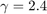
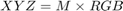

sRGB_to_XYZ
Navigate to: Home | Alphabetic list | Grouped list | Source code: sRGB_to_XYZ.m
Computes XYZ tristimulus value of displayed color on ideal sRGB display
Contents
Syntax
rv = sRGB_to_XYZ(R, G, B)
Input Arguments
- R: scalar, vector or matrix of double. The red sRGB values. Negative values are allowed; they correspond to colors outside the sRGB gamut.
- G: scalar, vector or matrix of double. The green sRGB values, must be same number of elements as R
- B: scalar, vector or matrix of double. The blue sRGB values, must be same number of elements as R
Output Arguments
- rv: struct with fields X , Y, Z, x,|y|, z (the tristimulus X, Y, Z values and color coordinates x, y, z, all same size as input argument R), and XYZ, an (n, 3) matrix, where n is the number of elements of input argument R, containing one XYZ value per row.
Algorithm
The sRGB standard, IEC 61966-2-1:1999, including Amendment 1, describes how desired XYZ tristimulus values on the display shall be created from sRGB values to encode color and brightness. See also <https://en.wikipedia.org/wiki/SRGB> for a detailed description. sRGB values are "gamma corrected": the first step is therefore to remove the gamma correction. For small values, gamma correction is linear, for large absolute values, it is a power function with . To cope with negative values, gamma correction f(X) is applied as -f(-X). After removing gamma correction, the result is known as "linear RGB": the amounts of the sRGB red, green and blue primaries. In step 2, linear RGB is converted to  with the matrix M derived from standardized primaries' tristimulus values. A display white point corresponding to D65 is assumed.
See also
Usage Example
function ExamplesRGB_to_XYZ() % the standard sRGB display white point: D65 d65_XYZ = CIE1931_XYZ( CIE_Illuminant('D65') ); % now compare to RGB = (1,1,1) test = sRGB_to_XYZ(1, 1, 1); fprintf('expected white point x,y,Y = (%g, %g, %g), got (%g, %g, %g)\n',... d65_XYZ.x, d65_XYZ.y, 1.000, test.x, test.y, test.Y); % test brightness and color of "perceived 50% gray": same color, but only 21% luminance half = 0.5; y_gray = ((200 * half + 11) / 211) .^ 2.4; % the standard sRGB gamma testgray = sRGB_to_XYZ(half, half, half); fprintf('expected gray point x,y,Y = (%g, %g, %g), got (%g, %g, %g)\n',... d65_XYZ.x, d65_XYZ.y, y_gray, testgray.x, testgray.y, testgray.Y); % test red sRGB primary sRGB_XYZ_R = [0.4124, 0.2126, 0.0193]; %from the standard testR = sRGB_to_XYZ(1,0,0); fprintf('red primary: expected (%g, %g, %g), got (%g, %g, %g)\n',... sRGB_XYZ_R(1), sRGB_XYZ_R(2), sRGB_XYZ_R(3), testR.X, testR.Y, testR.Z); % test inverse transformation xyz = sRGB_to_XYZ(1, 1, 1); rgb = XYZ_to_sRGB(xyz.X, xyz.Y, xyz.Z); fprintf('expect RGB = [1,1,1], obtained [%0.9f, %0.9f, %0.9f]\n',rgb.R, rgb.G, rgb.B); % test inverse transformation for tiny values xyz = sRGB_to_XYZ(0.0001, 0.0001, 0.0001); rgb = XYZ_to_sRGB(xyz.X, xyz.Y, xyz.Z); fprintf('expect RGB = [0.0001, 0.0001, 0.0001], obtained [%0.9f, %0.9f, %0.9f]\n',rgb.R, rgb.G, rgb.B); end
expected white point x,y,Y = (0.312726, 0.329023, 1), got (0.312716, 0.329001, 1) expected gray point x,y,Y = (0.312726, 0.329023, 0.214041), got (0.312716, 0.329001, 0.214041) red primary: expected (0.4124, 0.2126, 0.0193), got (0.4124, 0.2126, 0.0193) expect RGB = [1,1,1], obtained [0.999999997, 1.000000012, 0.999999950] expect RGB = [0.0001, 0.0001, 0.0001], obtained [0.000100000, 0.000100000, 0.000100000]